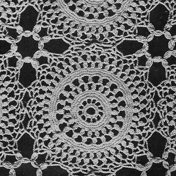

Will-O'-Wisp Tablecloth - Free Crochet Pattern MATERIALS: Clark's Big Ball Mercerized crochet, size 30, 28 balls of White or Ecru, or 31 balls of any color. Milward's steel crochet hook No. 11 or 12. GAUGE: Each motif measures about 4 1/2 inches in diameter, When completed, tablecloth measures about 72 x 90 inches. MOTIF: Starting at center, ch 12, join with sl st to form ring, 1st rnd: 24 sc in ring. Join with sl st. 2nd rnd: Ch 5, * skip 1 sc, dc in next sc, ch 2. Repeat from * around. Join last ch-2 with sl st to 3rd st of ch-5 first made (12 sps). 3rd rnd: 5 sc in each sp around. Join. 4th and 5th rnds: Sc in each sc around. Join. 6th rnd: Ch 3 (to count as dc), 2 dc in same place as sl st, holding back the last loop of each dc on hook; thread over and draw through all loops on hook, ch 1 to fasten (thus a 3-dc cluster is made); * ch 3, skip 2 sc, 3 dc in next sc, holding back the last loop of each dc on hook; thread over and draw through all loops on hook, ch 1 to fasten (another 3-dc cluster). Repeat from * around. Join last ch-3 to tip of 1st cluster. 7th rnd: Sl st in each of next 2 ch, ch 3, 2 dc in same sp, and complete as for a cluster, * ch 4, cluster in next ch-3 sp. Repeat from * around. Join last ch-4 to tip of 1st cluster (20 clusters). 8th rnd: * Sc in tip of cluster, 5 sc in next ch-4 sp. Repeat from around. Join (120 sc). 9th and 10th rnds: Sc in each sc around. 11th and 12th rnds: Repeat 6th and 7th rnds, having 40 (instead of 20) clusters in each rnd. 13th rnd: Sl st in each of next 2 ch, sc in same ch-4 sp, * ch 3; in next sp make dc, ch 3, dc; ch 3, sc in next ch-4 sp. Repeat from * around. Join. 14th rnd: Sc in sc, * ch 4; in ch-3 between 2 dc make dc, ch 3, dc; ch 4, sc in next sc. Repeat from * around. Join last ch-4 with sl st to 1st sc made. Break off. This completes one motif. Make 16 x 20 motifs, and sew together on wrong side with neat over-and-over stitches, joining 3 points of each motif to 3 points of adjacent motifs, leaving 2 points free on each motifs between joinings, to be filled in later. FILL-IN MOTIF: Attach thread to first free point from joining, ch 4 (to count as tr), 3 tr in same point, holding back the last loop of each tr on hook; thread over and draw through all loops on hook, ch 1 to fasten (a 4-tr cluster made); ch 4, 3 tr in fastening ch-1 of cluster just made, holding back the last loop of each tr on hook; thread over and draw through all loops on hook, * 4-tr cluster in next point, 4-tr cluster in fastening ch-1 of last cluster made. Repeat from * around. Fasten and break off.  HOME |